신규 AI 화면 샘플 검토
현재 Staging 템플릿·JavaScript·CSS와 공통 화면 틀을 실제 Chromium으로 렌더링한 18장입니다. 실제 사용자·DB·모델을 호출하지 않고 읽기 전용 합성 응답으로 화면 상태를 재현했습니다. 화면 결함을 수정하거나 배포하지 않았습니다.
발견 사항: 관리자 다크 모드의 제목·입력 항목명이 어두운 배경에서 잘 보이지 않습니다(P2). 답변 출처의 추론 값에 medium이 그대로 표시됩니다(P3). 모바일 하단 안내문 8px은 가독성 개선 권고입니다.
검토 판단
| 항목 | 관찰 | 상태 |
|---|---|---|
| 관리자 다크 모드 | #253044 글자 / #0f172a 배경, 대비 약 1.35:1. 제목·항목명 구분이 어렵습니다. | UI-01 · P2 · 수정 전 |
| 답변 출처 | 한글 추론 선택 메뉴와 달리 출처에는 medium이 노출됩니다. | UI-02 · P3 · 수정 전 |
| 모바일 안내 | 하단 권한·확인 안내가 8px로 작습니다. | UI-I01 · 개선 권고 |
| 샘플 렌더링 | 18장 준비 완료, 수집된 JS 예외 0, 문서 가로 넘침 0. 확인 카드 상세에서 실행 버튼 표시 확인. | 관찰 완료 · 실제 업무 실행 미검증 |
사용자 · 새 대화라이트

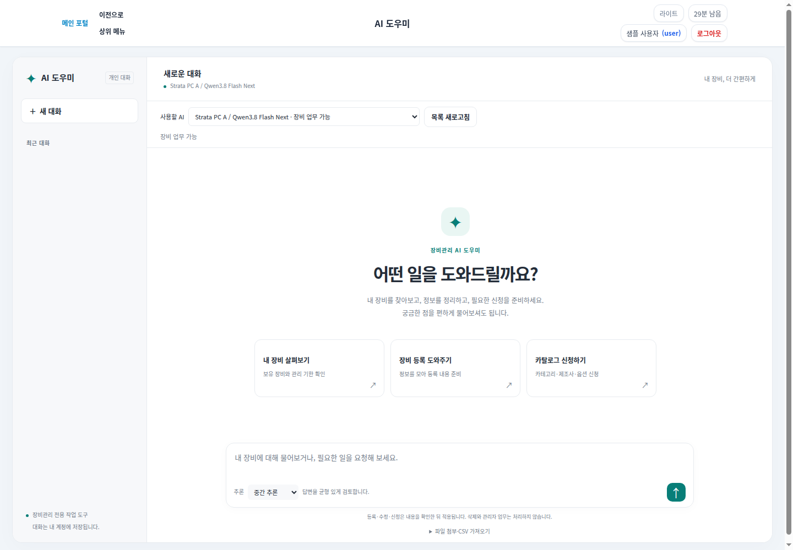

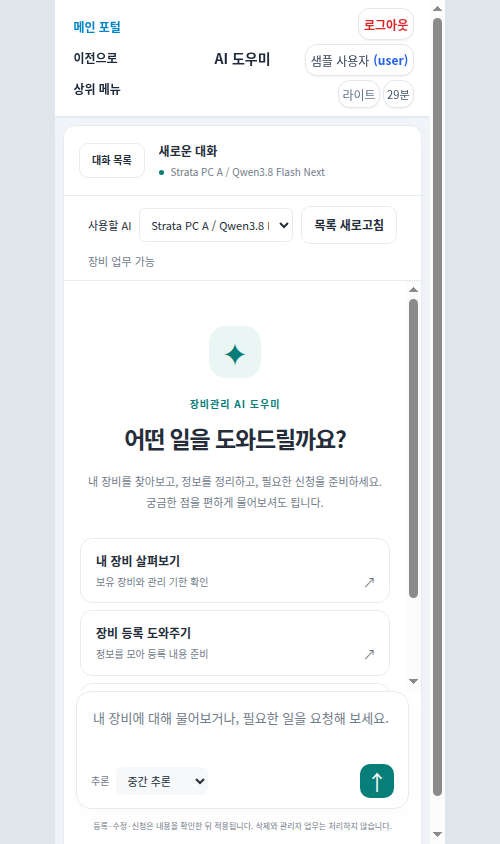
사용자 · 추론 진행다크

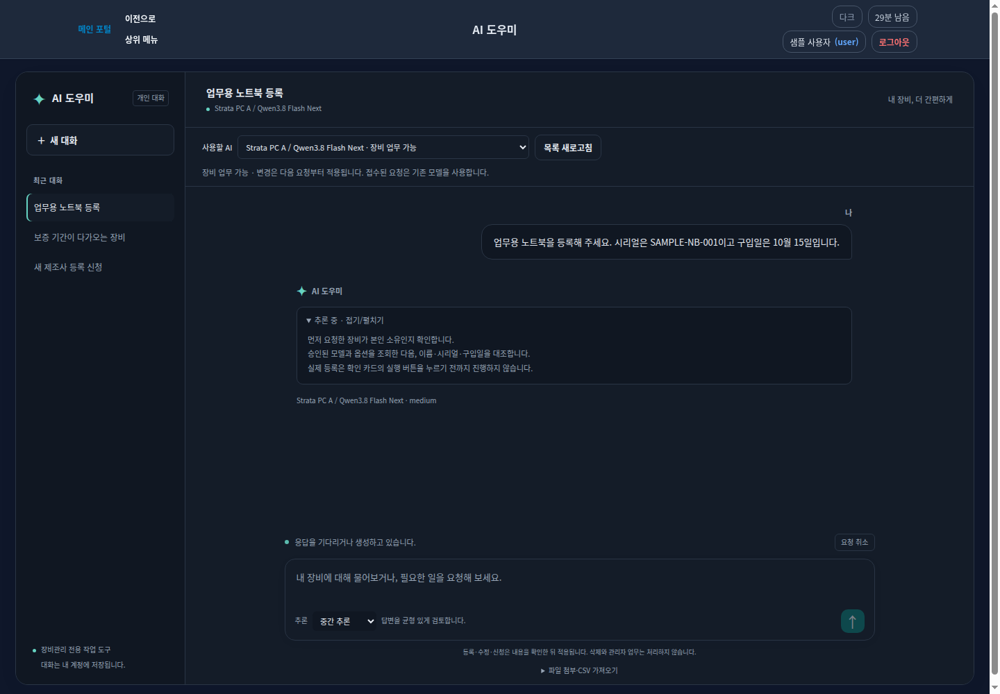

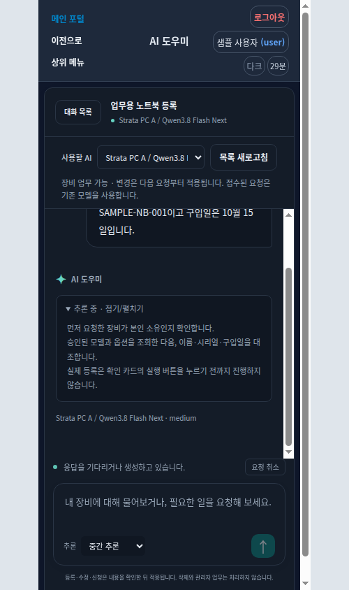
사용자 · 답변과 장비 등록 확인라이트

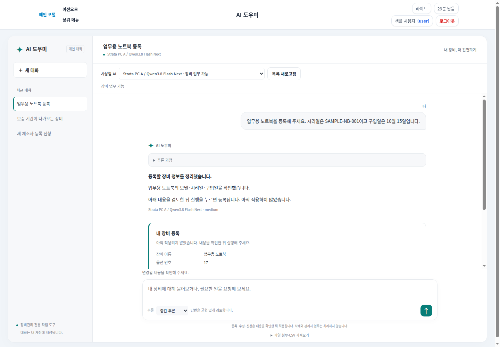

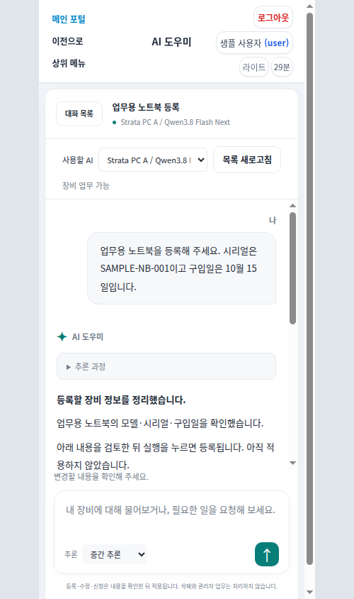
사용자 · 대화 전용 모델로 변경다크

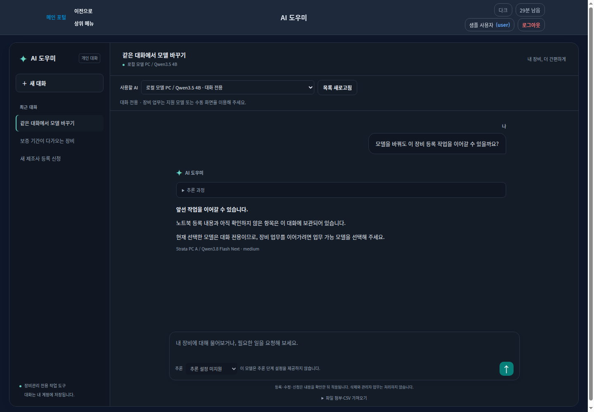

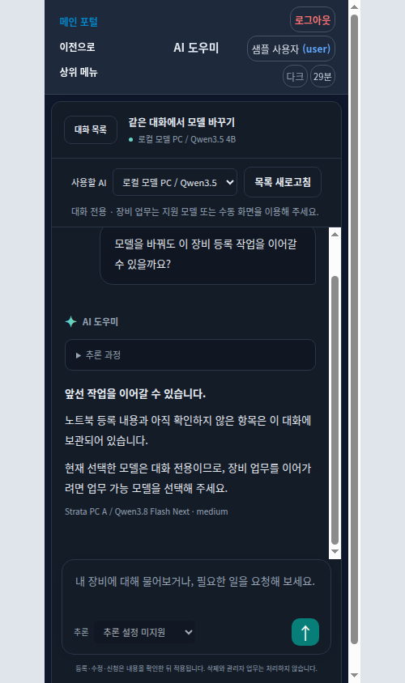
사용자 · 연결 중단과 종료 확인 안내라이트

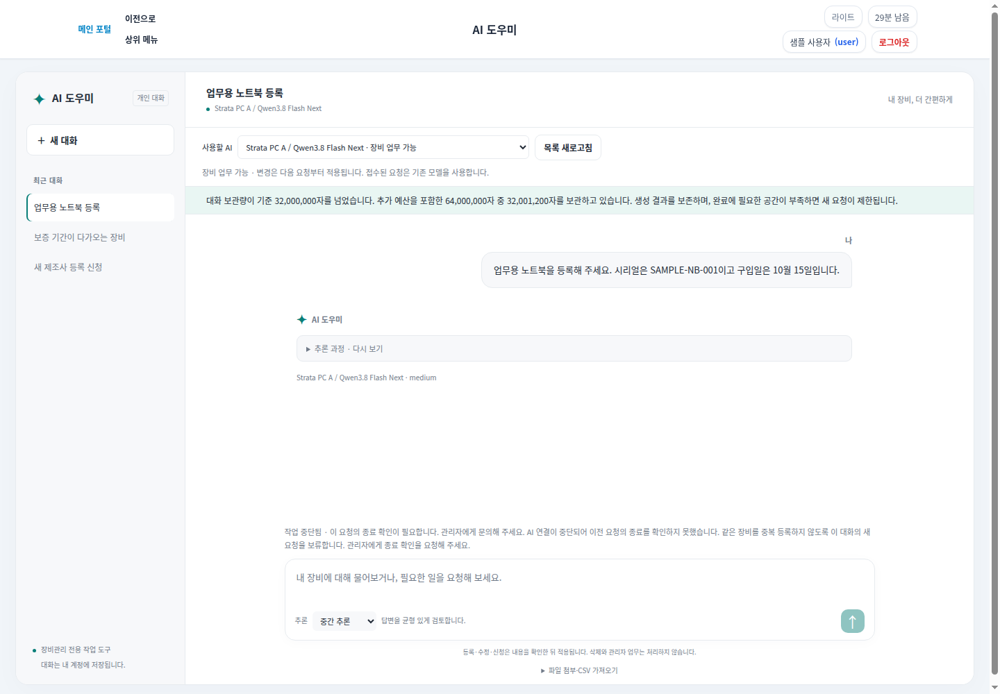

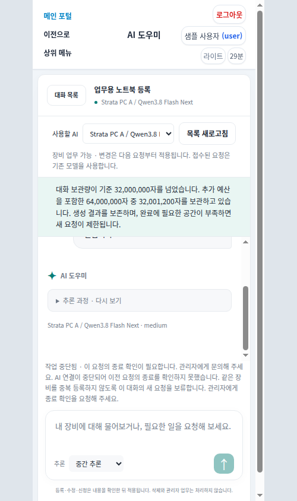
관리자 · 새 AI 연결라이트


관리자 · 기존 AI 연결라이트

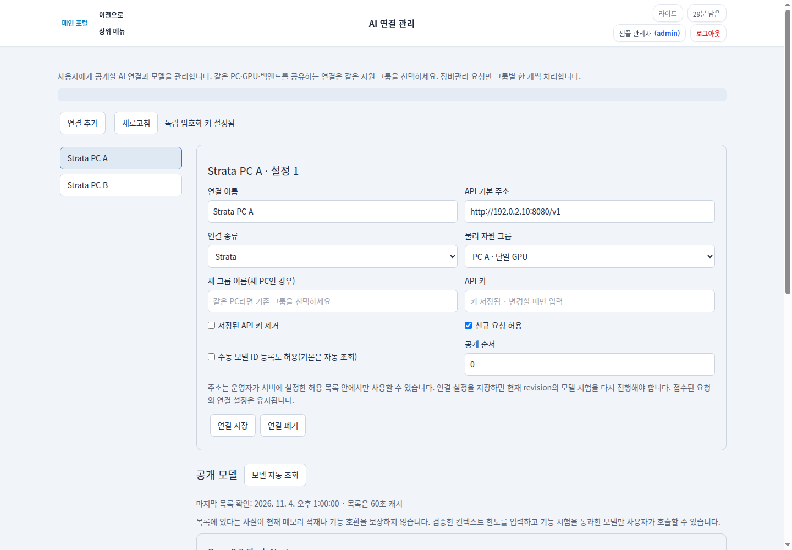

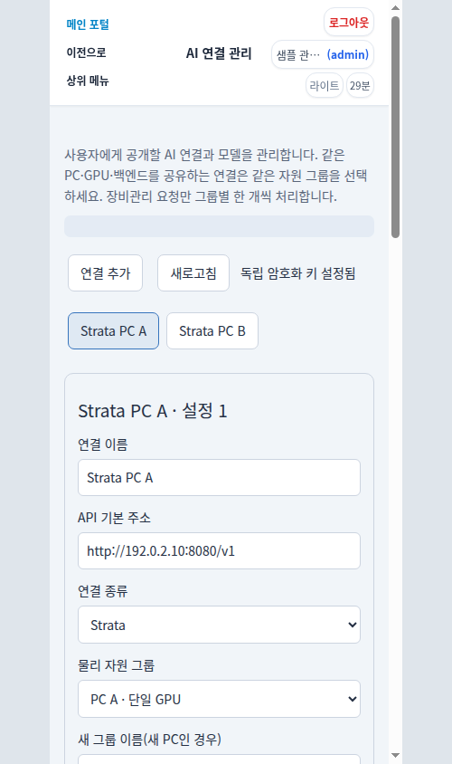
관리자 · 공개 모델과 기능 설정다크


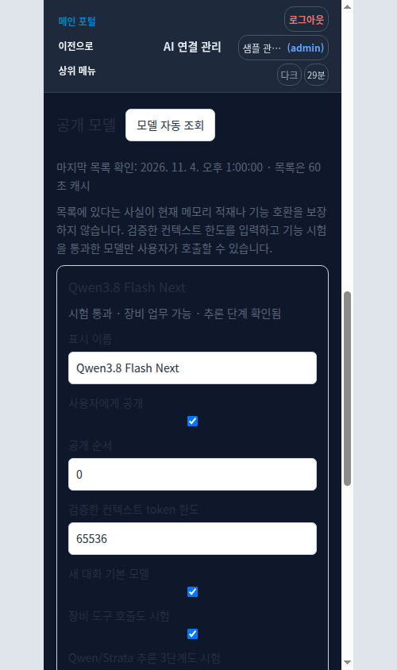
사용자 · 확인 카드와 실행 버튼 상세라이트

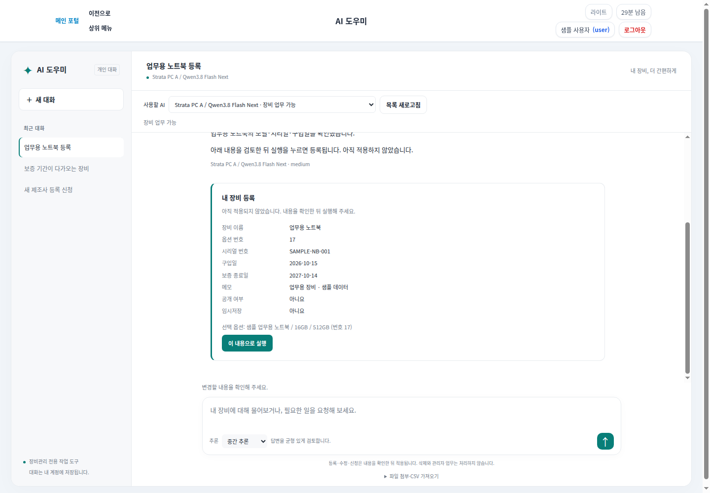

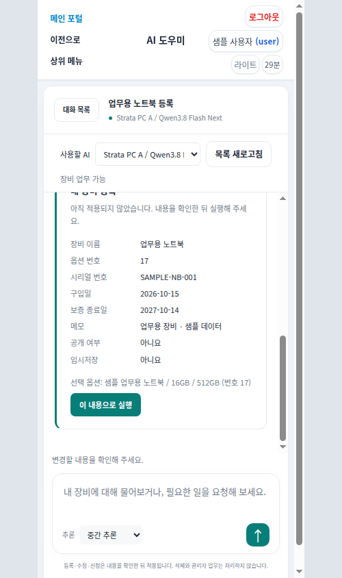